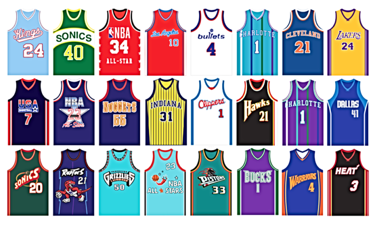

more
College Basketball News
*Latest News*
- _March Madness_: The NCAA Tournament is just around the corner, and teams are gearing up for the biggest event in college basketball.
- _Top 25 Rankings_: The latest AP Top 25 rankings have been released, with Purdue holding the top spot.
- _Conference Tournaments_: Conference tournaments are underway, with teams fighting for automatic bids to the NCAA Tournament.
*Top Performers*
- _Zach Edey (Purdue)_: Edey is dominating the paint, averaging 22.1 points and 12.7 rebounds per game.
- _Marcus Sasser (Houston)_: Sasser is leading the Cougars to a stellar season, averaging 17.3 points and 3.2 assists per game.
NBA Players' Families
*LeBron James' Family*
LeBron James is a devoted husband to Savannah Brinson James and father to their four children. His family is often seen supporting him at games and events.
*Steph Curry's Family*
Steph Curry is married to Ayesha Curry, and they have three children together. The Curry family is known for their philanthropic efforts and fun family moments on social media.
*Kevin Durant's Family*
Kevin Durant is close to his mother, Wanda Durant, who has been his rock throughout his career. He also has a brother, Tony Durant.
NBA Jerseys
*Latest Jersey Releases*
- _City Edition Jerseys_: The NBA has released its City Edition jerseys for the 2023-2024 season, featuring unique designs inspired by each team's city.
- _Classic Edition Jerseys_: The Classic Edition jerseys are back, featuring retro designs from the 80s and 90s.
*Best-Selling Jerseys*

- _LeBron James (Lakers)_: LeBron's Lakers jersey is one of the best-selling jerseys in the league.
- _Steph Curry (Warriors)_: Curry's Warriors jersey is a fan favorite, with his iconic number 30 on the back.
- _Giannis Antetokounmpo (Bucks)_: Giannis' Bucks jersey is popular among fans, featuring his number 34 on the back.
here is the link to lakers jersey :lakersjersey
here is the link to the official NBA website:NBA
you can also learn more from the wikipedia page:NBA.WIKIPEDIA
here is the link to current stats:NBAstats
here is the link to the latest news: latestnews